Time series data is of tremendous importance in the field of environmental sustainability. Exploring this kind of data helps us understand the pattern of ecosystems, which allows us to detect the abnormal changes in time and help the relative department to make decisions. In this study, I will use one state-of-the-art time series classification (TSC) model, fully convectional neural network (FCN) to classify the landcover type in Cape Floristic Region.
land cover classification dataset: This dataset is released by the Forestry, Fisheries and the Environment Department of Republic of South Africa. The dataset demonstrates the land cover change in South Africa from 1990 to 2020.
NDVI data: The time period of the NDVI data is from 2009 to 2018.
CHELSA dataset: monthly precipitation data, temperature data (mean) and radiation data of study area from 2009 to 2018.
soil data: Total N in the soil of study area. In this study I assume that the soil data of the study area does not change from 2009 to 2018.
seasonality concentration data: Cloud fraction seasonality concentration of the study area. In this study I assume that the seasonality concentration data of the study area does not change from 2009 to 2018.
DEM data: the digital elevation model of study area.In this study I assume that the DEM data of the study area does not change from 2009 to 2018.
The data used in this study is in two categories: static and dynamic. The precipitation data, temperature data and radiation data are considered as dynamic data while the soil data, DEM data and seasonality concentration data are considered as static data. (Another potential research question for this study is whether the static and dynamic data have same importance in this classification task)
This study can be divided into four parts:
data collection and pre-processing: In this part, I collected the aforementioned data and normalized them into the same value range (Except the NDVI data). The normalized value range for the NDVI data is [-1,1], while the normalized value range for the other environmental variables is (0,1].
build training and testing data sets: Based on the land cover classification data, I select pixels that do not change during the study period and build a mask based on them. This mask is then applied to select pixels from the NDVI and environmental variables data. Then the label from the classification data and the data from previous step are combined together and then splited into training and testing datasets.
build and train deep learning models: The deep learning model used in this study is proposed in Time series classification from scratch with deep neural networks: A strong baseline in 2017. In this study, I keep the original structure of the model from the paper and train the model with our dataset.
discussion: Based on the results I get from the previous step, the performance of FCN models will be analyzed.
In this study I planned to use ten years as the study period, however the large size of dataset would run into ‘Error: vector memory exhausted (limit reached?)’ Error. So on this website, I will only use one year as the study period. If you are interested in the original code, please contact me (yma28@buffalo.edu).
Here I list all the packages that I used in this study.
library(raster)## Loading required package: sp## Warning: multiple methods tables found for 'direction'## Warning: multiple methods tables found for 'gridDistance'library(lubridate)## Loading required package: timechange##
## Attaching package: 'lubridate'## The following objects are masked from 'package:raster':
##
## intersect, union## The following objects are masked from 'package:base':
##
## date, intersect, setdiff, unionlibrary(sp)
library(timechange)
library(plot3D)
library(ggplot2)
library(piggyback)
library(dst)
library(reticulate)
library(countcolors)
library(tidyterra)##
## Attaching package: 'tidyterra'## The following object is masked from 'package:raster':
##
## select## The following object is masked from 'package:stats':
##
## filterlibrary(downloader)
library(sf)## Linking to GEOS 3.10.2, GDAL 3.4.2, PROJ 8.2.1; sf_use_s2() is TRUElibrary(keras)##
## Attaching package: 'keras'## The following object is masked from 'package:dst':
##
## shapelibrary(tensorflow)##
## Attaching package: 'tensorflow'
##
## The following object is masked from 'package:dst':
##
## shapeIn this part we collected the time series data from Dr. Wilson’s github.
#year_list = c('2009','2010','2011','2012','2013','2014','2015','2016','2017','2018')
#date_list = list()
#count <- 1
#for(i in year_list){
# ss <- as.Date(paste(i,'-01-01',sep=''))
# dates <- seq(from=ss, by=32, length.out=12)
# for(j in 1:12){
# temp <- format(dates[[j]], format = '%Y_%m_%d')
# date_list[[count]] <- temp
# count <- count + 1
# }
#}
#date_list
date_list = list()
ss <- as.Date(paste(2018,'-01-01',sep=''))
dates <- seq(from=ss, by=32, length.out=12)
for(j in 1:12){
temp <- format(dates[[j]], format = '%Y_%m_%d')
date_list[[j]] <- temp
}
date_list## [[1]]
## [1] "2018_01_01"
##
## [[2]]
## [1] "2018_02_02"
##
## [[3]]
## [1] "2018_03_06"
##
## [[4]]
## [1] "2018_04_07"
##
## [[5]]
## [1] "2018_05_09"
##
## [[6]]
## [1] "2018_06_10"
##
## [[7]]
## [1] "2018_07_12"
##
## [[8]]
## [1] "2018_08_13"
##
## [[9]]
## [1] "2018_09_14"
##
## [[10]]
## [1] "2018_10_16"
##
## [[11]]
## [1] "2018_11_17"
##
## [[12]]
## [1] "2018_12_19"Here, I load all the NDVI data and compact them as one three-dimensional array. I firstly go through the data to check if there is any N.A or infinity values in the array. If there are infinity values, replace them with N.A values.
In this part I will show the code for downloading the data from Dr. Wilson’s github. I also uploaded the data in the release so this download code is commented out. Feel free to comment it in and use it if you want to download the data by yourself.
#ndvi_path <- "the place where you save your NDVI data"
#env_path <- "the place where you save your env data"
#download the NDVI data from Dr.Wilson's github
#for(i in 1:12){
# sample_data <- pb_download(paste(date_list[[i]],'.tif',sep = ''),
# repo = "AdamWilsonLab/emma_envdata",
# tag = "raw_ndvi_modis",
# dest = file.path(ndvi_path)
# )
#}
#download the env data
#dem_data <- pb_download('nasadem.tif',
# repo = "AdamWilsonLab/emma_envdata",
# tag = "processed_static",
# dest = file.path(env_path)
# )
#soil_data <- pb_download('soil_Total_N_.tif',
# repo = "AdamWilsonLab/emma_envdata",
# tag = "processed_static",
# dest = file.path(env_path)
# )
#conc_data <- pb_download('MODCF_seasonality_concentration.tif',
# repo = "AdamWilsonLab/emma_envdata",
# tag = "processed_static",
# dest = file.path(env_path)
# )This part collected NDVI data from January to December 2018 and visualize them.
NDVI_filelist = c()
for(i in 1:12){
NDVI_filelist[i] = paste('https://github.com/geo511-2022/final_project-YueMa28/releases/download/NDVI/',date_list[i],'.tif' ,sep="")
}
ndvi_rasters <- terra::rast(NDVI_filelist)
names(ndvi_rasters) <- c("Jan","Feb","Mar","Apr","May","Jun","Jul","Aug","Sep","Oct","Nov","Dec")
ggplot() +
geom_spatraster(data=ndvi_rasters) +
facet_wrap(~lyr, ncol = 4) ## SpatRaster resampled to ncells = 500860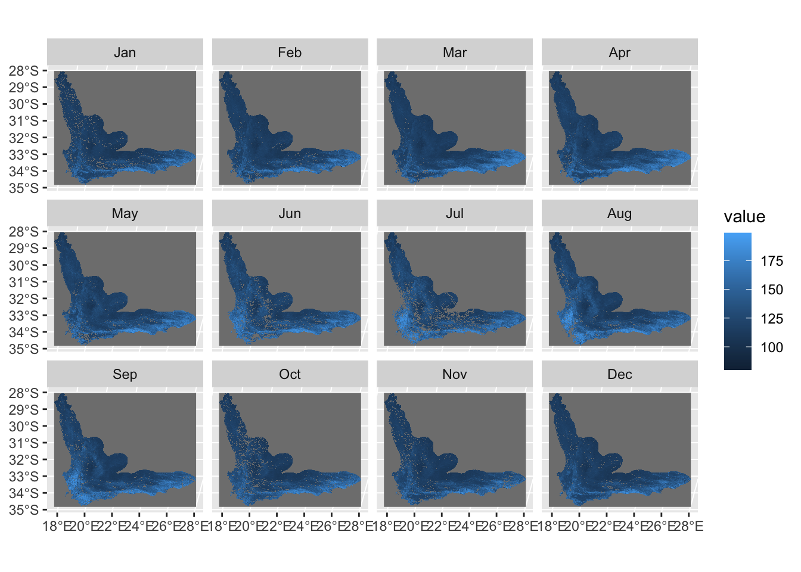 This part normalizes the NDVI data from original value range ([80,200]) to new value range ([-1,1]).
ndvi_rasters_norm <- (ndvi_rasters-100)/100
ggplot() +
geom_spatraster(data=ndvi_rasters_norm) +
facet_wrap(~lyr, ncol = 4) ## SpatRaster resampled to ncells = 500860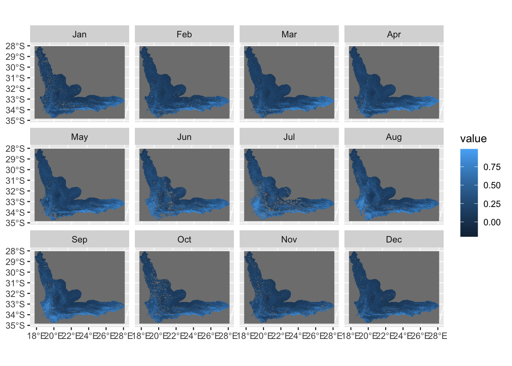 This part calculates the exact value range of this normalized NDVI data.
ndvi_arr_norm = as.array(ndvi_rasters_norm)
print(paste("There are nan values in NDVI data: ",as.character(NaN %in% ndvi_arr_norm,seq='')))## [1] "There are nan values in NDVI data: TRUE"print(paste("There are infinitive values in NDVI data: ",as.character(Inf %in% ndvi_arr_norm,seq='')))## [1] "There are infinitive values in NDVI data: FALSE"print(paste("The min value of NDVI data (without nan): ",min(ndvi_arr_norm,na.rm = TRUE)))## [1] "The min value of NDVI data (without nan): -0.2"print(paste("The max value of NDVI data (without nan): ",max(ndvi_arr_norm,na.rm = TRUE)))## [1] "The max value of NDVI data (without nan): 0.99"This part visualizes the normalized NDVI data.
image(ndvi_arr_norm[nrow(ndvi_arr_norm):1,,1],asp=1)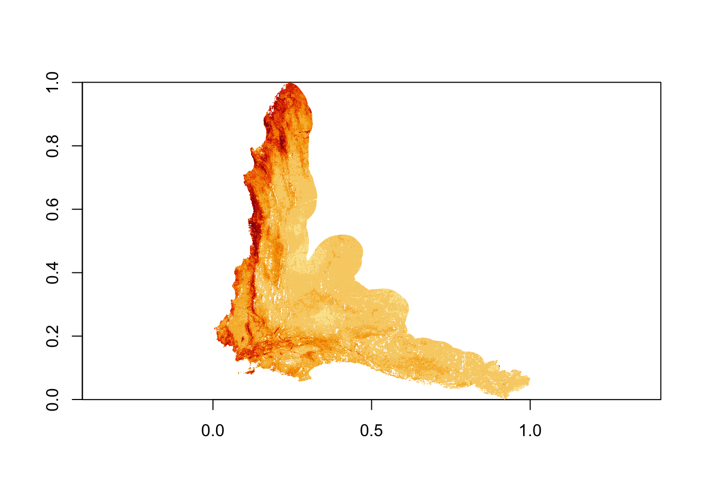 # collect the environmental data The environmental data have been already downloaded and uploaded in the release. Here is the code for loading them.
env_filelist = c()
env_filelist[1] = "https://github.com/geo511-2022/final_project-YueMa28/releases/download/ENV/nasadem.tif"
env_filelist[2] = "https://github.com/geo511-2022/final_project-YueMa28/releases/download/ENV/soil_Total_N_.tif"
env_filelist[3] = "https://github.com/geo511-2022/final_project-YueMa28/releases/download/ENV/MODCF_seasonality_concentration.tif"
env_rasters <- terra::rast(env_filelist)
names(env_rasters) <- c("dem","soil","concentration")
ggplot() +
geom_spatraster(data=env_rasters) +
facet_wrap(~lyr, ncol = 3) ## SpatRaster resampled to ncells = 500860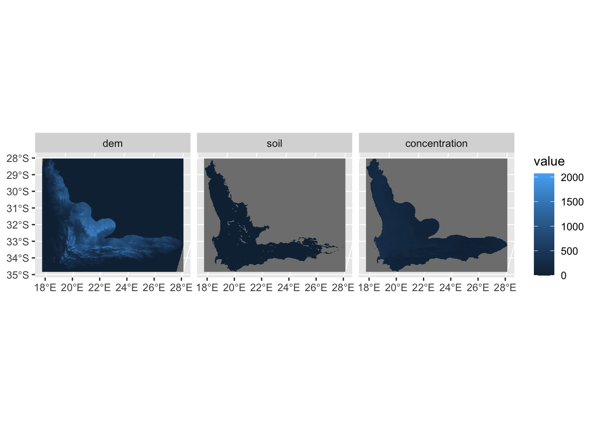 This part shows the value range of environmental variables.
env_arr_ori = as.array(env_rasters)
print(paste("There are nan values in static data: ",as.character(NaN %in% env_arr_ori,seq='')))## [1] "There are nan values in static data: TRUE"print(paste("There are infinitive values in static data: ",as.character(Inf %in% env_arr_ori,seq='')))## [1] "There are infinitive values in static data: FALSE"print(paste("The min value of static data (without nan): ",min(env_arr_ori,na.rm = TRUE)))## [1] "The min value of static data (without nan): -2.88884997367859"print(paste("The max value of static data (without nan): ",max(env_arr_ori,na.rm = TRUE)))## [1] "The max value of static data (without nan): 2177.22973632812"Here we normalized the environmental data and visualize them.
env_rasters_norm1 <- terra::rast()
dem_rasters <- terra::rast(env_filelist[1])
dem_min <- terra::minmax(dem_rasters)[1]
dem_max <- terra::minmax(dem_rasters)[2]
dem_rasters_norm <- (dem_rasters - dem_min + 1) / (dem_max - dem_min + 2)
soil_rasters <- terra::rast(env_filelist[2])
soil_min <- terra::minmax(soil_rasters)[1]
soil_max <- terra::minmax(soil_rasters)[2]
soil_rasters_norm <- (soil_rasters - soil_min + 1) / (soil_max - soil_min + 2)
conc_rasters <- terra::rast(env_filelist[3])
conc_min <- terra::minmax(conc_rasters)[1]
conc_max <- terra::minmax(conc_rasters)[2]
conc_rasters_norm <- (conc_rasters - conc_min + 1) / (conc_max - conc_min + 2)
env_rasters_norm <- c(dem_rasters_norm,soil_rasters_norm,conc_rasters_norm)
names(env_rasters_norm) <- c("dem","soil","concentration")
ggplot() +
geom_spatraster(data=env_rasters_norm) +
facet_wrap(~lyr, ncol = 3) ## SpatRaster resampled to ncells = 500860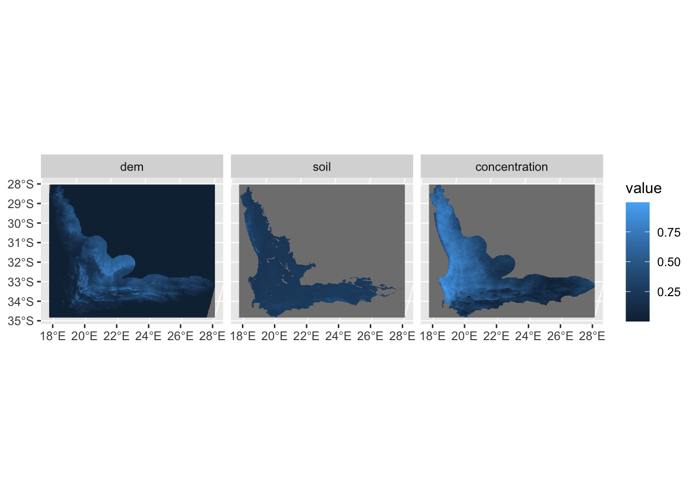 Here we explore the detailed information about the normalized environmental data.
env_arr_norm = as.array(env_rasters_norm)
print(paste("There are nan values in static data: ",as.character(NaN %in% env_arr_norm,seq='')))## [1] "There are nan values in static data: TRUE"print(paste("There are infinitive values in static data: ",as.character(Inf %in% env_arr_norm,seq='')))## [1] "There are infinitive values in static data: FALSE"print(paste("The min value of static data (without nan): ",min(env_arr_norm,na.rm = TRUE)))## [1] "The min value of static data (without nan): 0.000458270236217911"print(paste("The max value of static data (without nan): ",max(env_arr_norm,na.rm = TRUE)))## [1] "The max value of static data (without nan): 0.999541729763794"The precipitation (pr), radiation (rsds) and temperature (tas) data have been uploaded in the release part. The code below shows how to load and visualize them.
pr_filelist = c()
month <- c("01","02","03","04","05","06","07","08","09","10","11","12")
for(i in month){
pr_filelist[i] = paste('https://github.com/geo511-2022/final_project-YueMa28/releases/download/dynamic_pr/pr_',i,'_2018.tif' ,sep="")
}
pr_rasters <- terra::rast(pr_filelist)
names(pr_rasters) <- c("Jan","Feb","Mar","Apr","May","Jun","Jul","Aug","Sep","Oct","Nov","Dec")
pr_rasters=terra::project(pr_rasters,ndvi_rasters_norm)
ggplot() +
geom_spatraster(data=pr_rasters) +
facet_wrap(~lyr, ncol = 4) ## SpatRaster resampled to ncells = 500860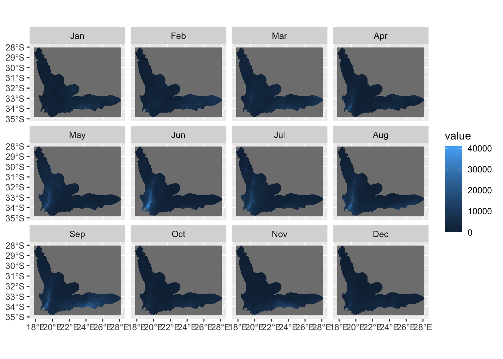 Here we explore the detailed information of precipitation data.
prec_arr_ori <- as.array(pr_rasters)
print(paste("There are nan values in precipitation data: ",as.character(NaN %in% prec_arr_ori,seq='')))## [1] "There are nan values in precipitation data: TRUE"print(paste("There are infinitive values in precipitation data: ",as.character(Inf %in% prec_arr_ori,seq='')))## [1] "There are infinitive values in precipitation data: FALSE"print(paste("The min value of precipitation data (without nan): ",min(prec_arr_ori,na.rm = TRUE)))## [1] "The min value of precipitation data (without nan): 0"print(paste("The max value of precipitation data (without nan): ",max(prec_arr_ori,na.rm = TRUE)))## [1] "The max value of precipitation data (without nan): 41017.8359375"Here we normalize the precipitation data and visualize them.
pr_rasters_norm1 <- terra::rast()
for(i in 1:11){
current_raster <- terra::rast(pr_filelist[i])
current_min <- terra::minmax(current_raster)[1]
current_max <- terra::minmax(current_raster)[2]
current_raster_norm <- (current_raster - current_min + 1) / (current_max - current_min + 2)
current_raster_norm = terra::project(current_raster_norm,ndvi_rasters_norm)
pr_rasters_norm1 <- c(pr_rasters_norm1,current_raster_norm)
}## Warning: [rast] the first raster was empty and was ignoredcurrent_raster <- terra::rast(pr_filelist[12])
current_min <- terra::minmax(current_raster)[1]
current_max <- terra::minmax(current_raster)[2]
current_raster_norm <- (current_raster - current_min + 1) / (current_max - current_min + 2)
current_raster_norm = terra::project(current_raster_norm,ndvi_rasters_norm)
pr_rasters_norm <- c(pr_rasters_norm1,current_raster_norm)
names(pr_rasters_norm) <- c("Jan","Feb","Mar","Apr","May","Jun","Jul","Aug","Sep","Oct","Nov","Dec")
ggplot() +
geom_spatraster(data=pr_rasters_norm) +
facet_wrap(~lyr, ncol = 4) ## SpatRaster resampled to ncells = 500860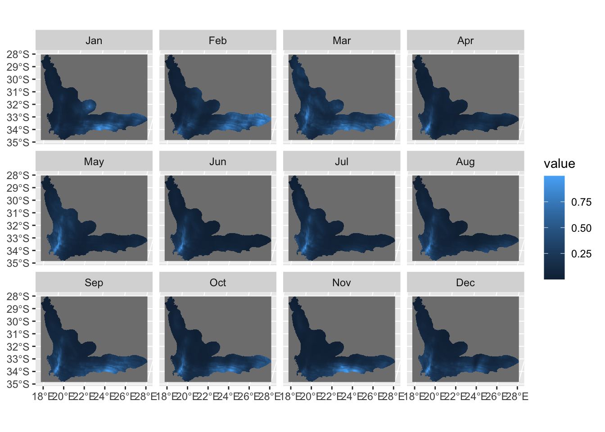 Here we explore more about the normalized precipitation data.
prec_arr_norm <- as.array(pr_rasters_norm)
print(paste("There are nan values in precipitation data: ",as.character(NaN %in% prec_arr_norm,seq='')))## [1] "There are nan values in precipitation data: TRUE"print(paste("There are infinitive values in precipitation data: ",as.character(Inf %in% prec_arr_norm,seq='')))## [1] "There are infinitive values in precipitation data: FALSE"print(paste("The min value of precipitation data (without nan): ",min(prec_arr_norm,na.rm = TRUE)))## [1] "The min value of precipitation data (without nan): 2.44033381022746e-05"print(paste("The max value of precipitation data (without nan): ",max(prec_arr_norm,na.rm = TRUE)))## [1] "The max value of precipitation data (without nan): 0.999903976917267"Here we load the rsds data and visualize them.
rsds_filelist = c()
month <- c("01","02","03","04","05","06","07","08","09","10","11","12")
for(i in month){
rsds_filelist[i] = paste('https://github.com/geo511-2022/final_project-YueMa28/releases/download/dynamic_rsds/rsds_',i,'_2018.tif' ,sep="")
}
rsds_rasters <- terra::rast(rsds_filelist)
names(rsds_rasters) <- c("Jan","Feb","Mar","Apr","May","Jun","Jul","Aug","Sep","Oct","Nov","Dec")
rsds_rasters = terra::project(rsds_rasters,ndvi_rasters_norm)
ggplot() +
geom_spatraster(data=rsds_rasters) +
facet_wrap(~lyr, ncol = 4) ## SpatRaster resampled to ncells = 500860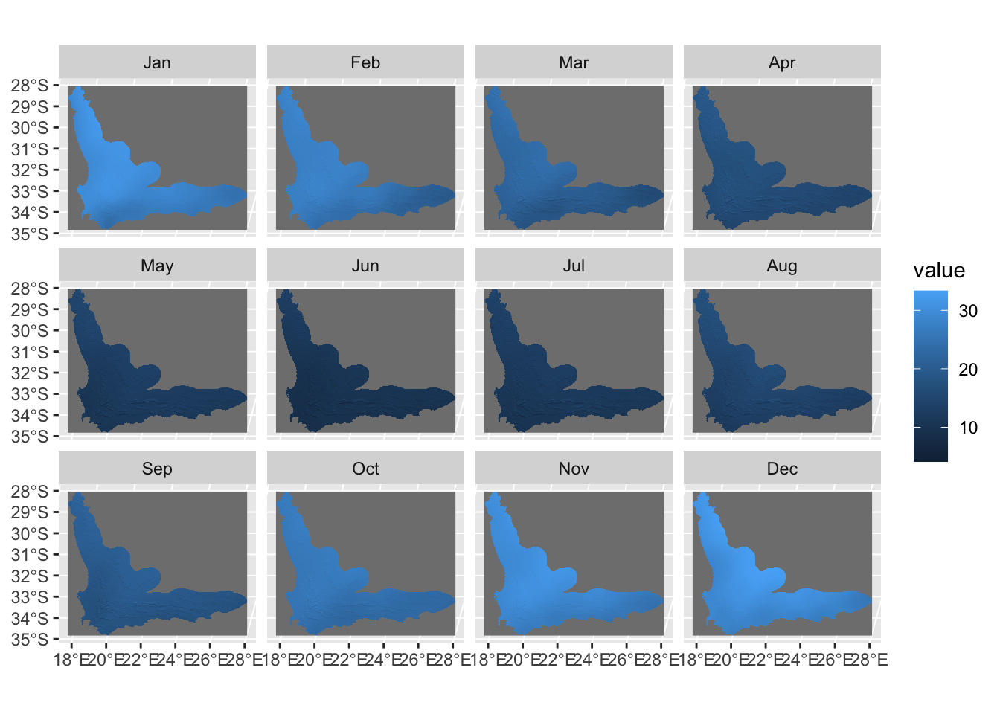 Here we explore the details of the original rsds data.
rsds_arr_ori <- as.array(rsds_rasters)
print(paste("There are nan values in downwelling shortwave flux data: ",as.character(NaN %in% rsds_arr_ori,seq='')))## [1] "There are nan values in downwelling shortwave flux data: TRUE"print(paste("There are infinitive values in downwelling shortwave flux data: ",as.character(Inf %in% rsds_arr_ori,seq='')))## [1] "There are infinitive values in downwelling shortwave flux data: FALSE"print(paste("The min value of downwelling shortwave flux data (without nan): ",min(rsds_arr_ori,na.rm = TRUE)))## [1] "The min value of downwelling shortwave flux data (without nan): 3.93215537071228"print(paste("The max value of downwelling shortwave flux data (without nan): ",max(rsds_arr_ori,na.rm = TRUE)))## [1] "The max value of downwelling shortwave flux data (without nan): 33.3390007019043"Here we normalize the rsds data and visualize them.
rsds_rasters_norm1 <- terra::rast()
for(i in 1:11){
current_raster <- terra::rast(rsds_filelist[i])
current_min <- terra::minmax(current_raster)[1]
current_max <- terra::minmax(current_raster)[2]
current_raster_norm <- (current_raster - current_min + 1) / (current_max - current_min + 2)
current_raster_norm = terra::project(current_raster_norm,ndvi_rasters_norm)
rsds_rasters_norm1 <- c(rsds_rasters_norm1,current_raster_norm)
}## Warning: [rast] the first raster was empty and was ignoredcurrent_raster <- terra::rast(rsds_filelist[12])
current_min <- terra::minmax(current_raster)[1]
current_max <- terra::minmax(current_raster)[2]
current_raster_norm <- (current_raster - current_min + 1) / (current_max - current_min + 2)
current_raster_norm = terra::project(current_raster_norm,ndvi_rasters_norm)
rsds_rasters_norm <- c(rsds_rasters_norm1,current_raster_norm)
names(rsds_rasters_norm) <- c("Jan","Feb","Mar","Apr","May","Jun","Jul","Aug","Sep","Oct","Nov","Dec")
ggplot() +
geom_spatraster(data=rsds_rasters_norm) +
facet_wrap(~lyr, ncol = 4) ## SpatRaster resampled to ncells = 500860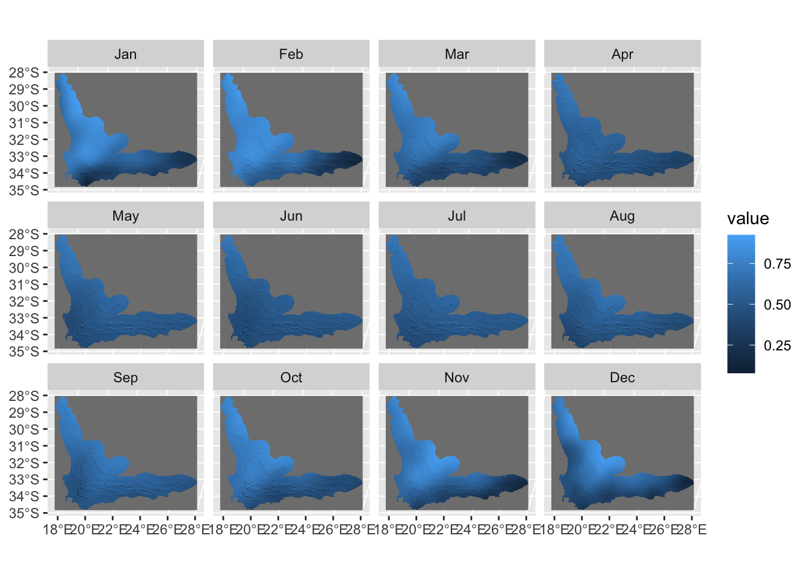 Here we explore more about normalized rsds data.
rsds_arr_norm <- as.array(rsds_rasters_norm)
print(paste("There are nan values in downwelling shortwave flux data: ",as.character(NaN %in% rsds_arr_norm,seq='')))## [1] "There are nan values in downwelling shortwave flux data: TRUE"print(paste("There are infinitive values in downwelling shortwave flux data: ",as.character(Inf %in% rsds_arr_norm,seq='')))## [1] "There are infinitive values in downwelling shortwave flux data: FALSE"print(paste("The min value of downwelling shortwave flux data (without nan): ",min(rsds_arr_norm,na.rm = TRUE)))## [1] "The min value of downwelling shortwave flux data (without nan): 0.0785741209983826"print(paste("The max value of downwelling shortwave flux data (without nan): ",max(rsds_arr_norm,na.rm = TRUE)))## [1] "The max value of downwelling shortwave flux data (without nan): 0.924350321292877"Here we load the tas data from release and visualize them.
tas_filelist = c()
month <- c("01","02","03","04","05","06","07","08","09","10","11","12")
for(i in month){
tas_filelist[i] = paste('https://github.com/geo511-2022/final_project-YueMa28/releases/download/dynamic_tas/tas_',i,'_2018.tif' ,sep="")
}
tas_rasters <- terra::rast(tas_filelist)
names(tas_rasters) <- c("Jan","Feb","Mar","Apr","May","Jun","Jul","Aug","Sep","Oct","Nov","Dec")
tas_rasters = terra::project(tas_rasters,ndvi_rasters_norm)
ggplot() +
geom_spatraster(data=tas_rasters) +
facet_wrap(~lyr, ncol = 4) ## SpatRaster resampled to ncells = 500860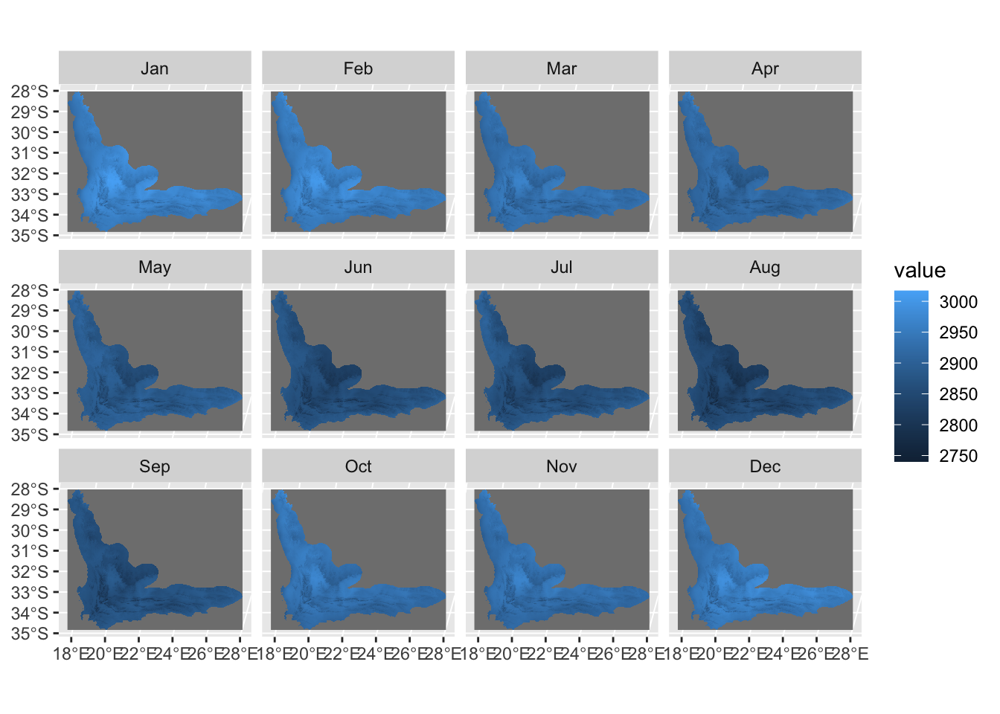 Here we explore more about the original tas data.
tas_arr_ori <- as.array(tas_rasters)
print(paste("There are nan values in mean daily airtemperature data: ",as.character(NaN %in% tas_arr_ori,seq='')))## [1] "There are nan values in mean daily airtemperature data: TRUE"print(paste("There are infinitive values in mean daily air temperature data: ",as.character(Inf %in% tas_arr_ori,seq='')))## [1] "There are infinitive values in mean daily air temperature data: FALSE"print(paste("The min value of mean daily air temperature data (without nan): ",min(tas_arr_ori,na.rm = TRUE)))## [1] "The min value of mean daily air temperature data (without nan): 2735.2841796875"print(paste("The max value of mean daily air temperature data (without nan): ",max(tas_arr_ori,na.rm = TRUE)))## [1] "The max value of mean daily air temperature data (without nan): 3017"Here we normalize the tas data and visualize them.
tas_rasters_norm1 <- terra::rast()
for(i in 1:11){
current_raster <- terra::rast(tas_filelist[i])
current_min <- terra::minmax(current_raster)[1]
current_max <- terra::minmax(current_raster)[2]
current_raster_norm <- (current_raster - current_min + 1) / (current_max - current_min + 2)
current_raster_norm = terra::project(current_raster_norm,ndvi_rasters_norm)
tas_rasters_norm1 <- c(tas_rasters_norm1,current_raster_norm)
}## Warning: [rast] the first raster was empty and was ignoredcurrent_raster <- terra::rast(tas_filelist[12])
current_min <- terra::minmax(current_raster)[1]
current_max <- terra::minmax(current_raster)[2]
current_raster_norm <- (current_raster - current_min + 1) / (current_max - current_min + 2)
current_raster_norm = terra::project(current_raster_norm,ndvi_rasters_norm)
tas_rasters_norm <- c(tas_rasters_norm1,current_raster_norm)
names(tas_rasters_norm) <- c("Jan","Feb","Mar","Apr","May","Jun","Jul","Aug","Sep","Oct","Nov","Dec")
ggplot() +
geom_spatraster(data=tas_rasters_norm) +
facet_wrap(~lyr, ncol = 4) ## SpatRaster resampled to ncells = 500860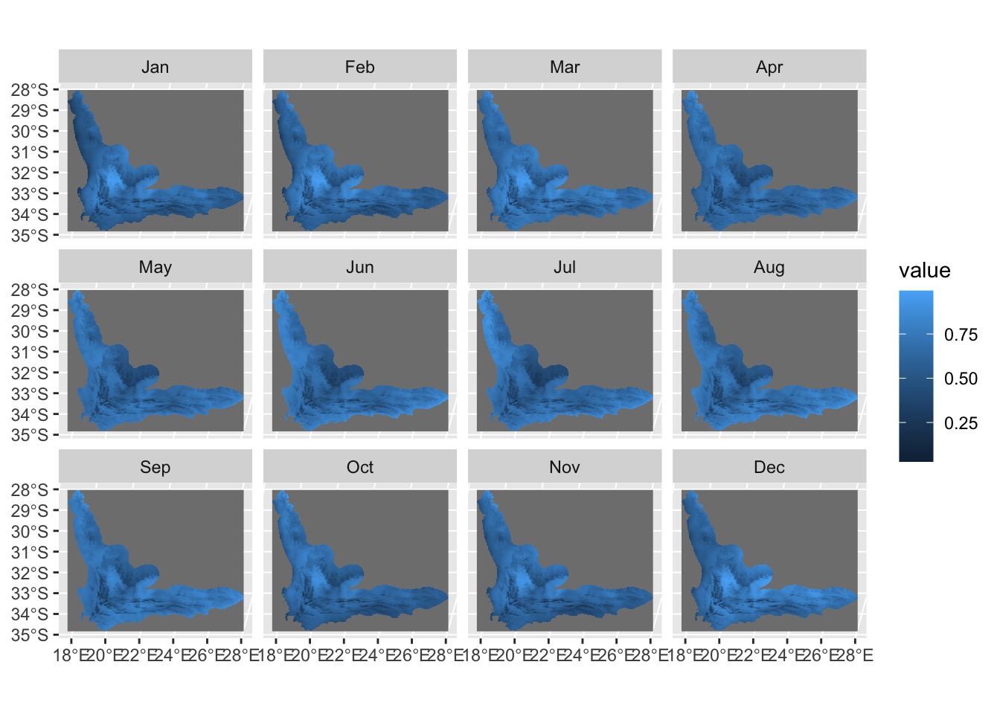 Here we explore more about the normalized tas data.
tas_arr_norm <- as.array(tas_rasters_norm)
print(paste("There are nan values in mean daily airtemperature data: ",as.character(NaN %in% tas_arr_norm,seq='')))## [1] "There are nan values in mean daily airtemperature data: TRUE"print(paste("There are infinitive values in mean daily air temperature data: ",as.character(Inf %in% tas_arr_norm,seq='')))## [1] "There are infinitive values in mean daily air temperature data: FALSE"print(paste("The min value of mean daily air temperature data (without nan): ",min(tas_arr_norm,na.rm = TRUE)))## [1] "The min value of mean daily air temperature data (without nan): 0.0130536817014217"print(paste("The max value of mean daily air temperature data (without nan): ",max(tas_arr_norm,na.rm = TRUE)))## [1] "The max value of mean daily air temperature data (without nan): 0.993902444839478"Here we combine all the data we collected above into one spatRaster.
#pr_rasters_norm=terra::project(pr_rasters_norm,ndvi_rasters_norm)
all_variables_raster <- c(ndvi_rasters_norm,env_rasters_norm,pr_rasters_norm,rsds_rasters_norm,tas_rasters_norm)This part generate the label of the training dataset. The original data has been uploaded to the release part.
land_cover_type <- terra::rast("https://github.com/geo511-2022/final_project-YueMa28/releases/download/landcover_type/clipped_1990_2020.tif")
land_cover_type=terra::project(land_cover_type,ndvi_rasters_norm)
land_cover_arr <- as.array(land_cover_type)
print(paste("There are nan values in the land cover data: ",as.character(NaN %in% land_cover_arr,seq='')))## [1] "There are nan values in the land cover data: TRUE"print(paste("There are infinitive values in the land cover data ",as.character(Inf %in% land_cover_arr,seq='')))## [1] "There are infinitive values in the land cover data FALSE"Here we created a binary mask to distinguish the pixels that are shrubland from the pixels that are not. Then we visualize the mask.
binary_mask <- array(dim=c(1634,2035))
for(i in 1:1634){
for(j in 1:2035){
if(is.nan(land_cover_arr[i,j,1])){
binary_mask[i,j] = NaN
}
else if(land_cover_arr[i,j,1] == 105){
binary_mask[i,j] = 1
}
else{
binary_mask[i,j] = 0
}
}
}
image(binary_mask,asp=1)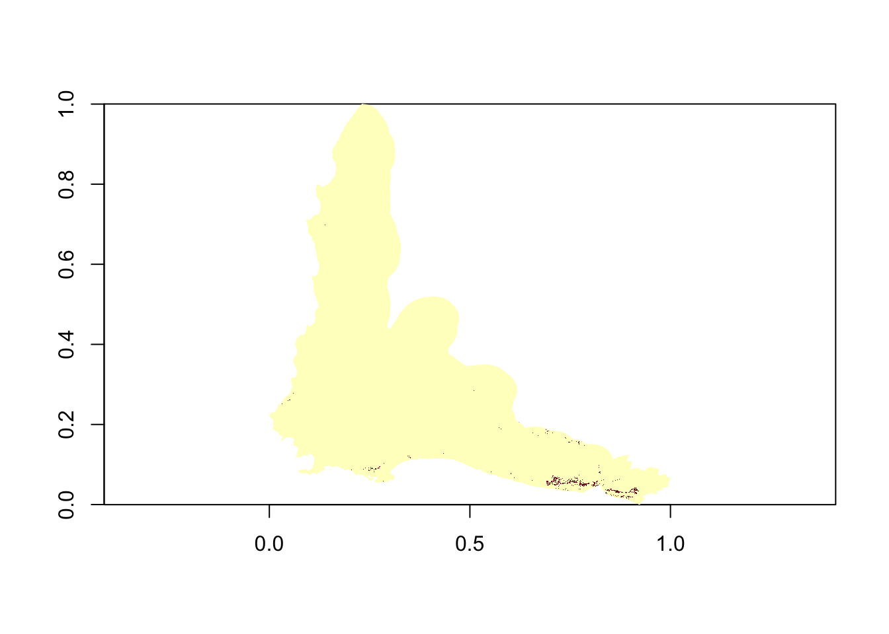 Here we created a mask that distinguish pixels whose values are all valid from the pixels which contains invalid data. Then we visualize the mask.
#all_variables_arr <- array(dim=c(1634,2035,12,7))
all_variables_mask <- array(dim=c(1634,2035))
count_1 <- 0
for(i in 1:1634){
for(j in 1:2035){
for(k in 1:12){
if(is.nan(ndvi_arr_norm[i,j,k])){
all_variables_mask[i,j] = -1
break
}
else if(is.nan(prec_arr_norm[i,j,k])){
all_variables_mask[i,j] = -1
break
}
else if(is.nan(rsds_arr_norm[i,j,k])){
all_variables_mask[i,j] = -1
break
}
else if(is.nan(tas_arr_norm[i,j,k])){
all_variables_mask[i,j] = -1
break
}
else{
all_variables_mask[i,j] = 1
count_1 <- count_1 + 1
}
for(h in 1:3){
if(is.nan(env_arr_norm[i,j,h])){
all_variables_mask[i,j] = -1
break
}
else{
all_variables_mask[i,j] = 1
count_1 <- count_1 + 1
}
}
}
}
}
image(all_variables_mask,asp=1)Here we combine the two masks we created above and select pixels to train our model. Then we visualize the combined mask.
combine_mask <- array(dim=c(1634,2035))
total_valid_count <- 0
for(m in 1:1634){
for(n in 1:2035){
if(is.nan(binary_mask[m,n])){
combine_mask[m,n] = -1
}
else if(all_variables_mask[m,n] == -1){
combine_mask[m,n] = -1
}
else{
combine_mask[m,n] = 1
total_valid_count <- total_valid_count + 1
}
}
}
image(combine_mask,asp=1)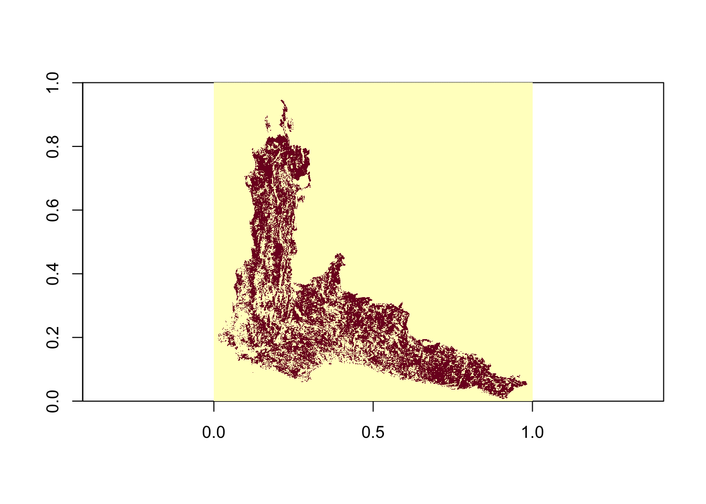
print(total_valid_count)## [1] 517642#1 %in% all_variables_mask
#valid_number <- 0
#for(i in 1:1634){
# for(j in 1:2035){
# if(combine_mask[i,j]==1){
# valid_number = valid_number + 1
# }
# else{
# next
# }
# }
#}
#valid_number
#train_number = as.integer(valid_number*0.75)
#test_number = as.integer(valid_number*0.25)Here we extract the time-series data from the selected pixels and combine them into two arrays.
total_dataset <- array(dim = c(total_valid_count,12,7))
total_label <- array(dim = c(total_valid_count,1))
total_dataset_count <- 0
for(m in 1:1634){
for(n in 1:2035){
if(combine_mask[m,n] == 1){
for(i in 1:12){
total_dataset[total_dataset_count,i,1] = ndvi_arr_norm[m,n,i]
total_dataset[total_dataset_count,i,2] = prec_arr_norm[m,n,i]
total_dataset[total_dataset_count,i,3] = rsds_arr_norm[m,n,i]
total_dataset[total_dataset_count,i,4] = tas_arr_norm[m,n,i]
total_dataset[total_dataset_count,i,5] = env_arr_norm[m,n,1]
total_dataset[total_dataset_count,i,6] = env_arr_norm[m,n,2]
total_dataset[total_dataset_count,i,7] = env_arr_norm[m,n,3]
}
if(binary_mask[m,n] == 105){
total_label[total_dataset_count,1] = 1
}
else{
total_label[total_dataset_count,1] = 0
}
total_dataset_count <- total_dataset_count + 1
}
}
}Here we randomly split the dataset (75%-25%) as training dataset and testing dataset.
set.seed(10000)
random_number <- sample(1:total_valid_count,as.integer(0.75*total_valid_count),replace=F)
train_dataset <- array(dim=c(as.integer(0.75*total_valid_count),12,7))
train_label <- array(dim=c(as.integer(0.75*total_valid_count),1))
test_dataset <- array(dim=c(as.integer(0.25*total_valid_count),12,7))
test_label <- array(dim=c(as.integer(0.25*total_valid_count),1))
train_count <- 0
test_count <- 0
for(i in 1:total_valid_count){
if(i %in% random_number){
train_dataset[train_count,,] = total_dataset[i,,]
train_label[train_count,] = total_label[i,]
train_count = train_count + 1
}
else{
test_dataset[test_count,,] = total_dataset[i,,]
test_label[test_count,] = total_label[i,]
test_count = test_count + 1
}
}
dim(train_dataset) <- c(as.integer(0.75*total_valid_count),12,7,1)
train_label <- to_categorical(train_label,2)## Loaded Tensorflow version 2.10.0dim(test_dataset) <- c(as.integer(0.25*total_valid_count),12,7,1)
test_label <- to_categorical(test_label,2)Here we build the FCN model and train it with our training dataset. Due to the limitation of Github memory, I set the epoch to 5. Please feel free to change the epoch and batch_size number based on the memory of your server.
FCN_model <-keras_model_sequential()
FCN_model %>%
#layer_input(shape=c(12,7,1)) %>%
layer_conv_2d(filter=128,kernel_size=c(5,5),strides=1,padding = 'same',input_shape = c(12,7,1)) %>%
layer_batch_normalization() %>%
layer_activation('relu') %>%
layer_conv_2d(filter=256,kernel_size=c(5,5),strides=1,padding = 'same') %>%
layer_batch_normalization() %>%
layer_activation('relu') %>%
layer_conv_2d(filters = 128,kernel_size=c(3,3),strides=1,padding = 'same') %>%
layer_batch_normalization() %>%
layer_activation('relu') %>%
layer_global_average_pooling_2d() %>%
layer_dense(2,activation = 'softmax')
FCN_model %>% compile(
optimizer = 'adam',
loss = 'binary_crossentropy',
metrics = c('accuracy')
)
history = FCN_model %>%
fit(train_dataset,
train_label,
epoch = 5,
batch_size = 10,
verbose=1)Here we show the structure of our trained model.
summary(FCN_model)## Model: "sequential"
## ________________________________________________________________________________
## Layer (type) Output Shape Param # Trainable
## ================================================================================
## conv2d_2 (Conv2D) (None, 12, 7, 128) 3328 Y
## batch_normalization_2 (BatchN (None, 12, 7, 128) 512 Y
## ormalization)
## activation_2 (Activation) (None, 12, 7, 128) 0 Y
## conv2d_1 (Conv2D) (None, 12, 7, 256) 819456 Y
## batch_normalization_1 (BatchN (None, 12, 7, 256) 1024 Y
## ormalization)
## activation_1 (Activation) (None, 12, 7, 256) 0 Y
## conv2d (Conv2D) (None, 12, 7, 128) 295040 Y
## batch_normalization (BatchNor (None, 12, 7, 128) 512 Y
## malization)
## activation (Activation) (None, 12, 7, 128) 0 Y
## global_average_pooling2d (Glo (None, 128) 0 Y
## balAveragePooling2D)
## dense (Dense) (None, 2) 258 Y
## ================================================================================
## Total params: 1,120,130
## Trainable params: 1,119,106
## Non-trainable params: 1,024
## ________________________________________________________________________________Here we evaluate the performance of our model based on the test dataset. Based on the loss and accuracy data calculated below, it seems that the FCN model has achieved an ideal performance. However, this results may be caused by the limited number of training data and the ratio between positive and negative labels. Detialed experience should be conducted as a follow-up research to optimaize the performance of this model.
FCN_model %>% evaluate(test_dataset, test_label)## loss accuracy
## 0 1Though the model was trained with only limited datasets and limited epochs, the results still show that it is feasible to conduct land cover classification with FCN model. For next step, I plan to try different datasets and test the performance. Specifically, I plan to use different bands from hyperspectral remote sensing data to train the model instead of the environmental variables data. Different callback functions will be taken into consideration as well to achieve a better performance of FCN model.
Wang Z, Yan W, Oates T. Time series classification from scratch with deep neural networks: A strong baseline[C]//2017 International joint conference on neural networks (IJCNN). IEEE, 2017: 1578-1585.